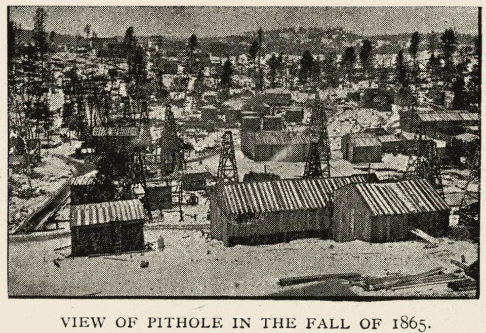

· Edición 73 · 4 min de lectura
El consumo mundial de petróleo tocaría techo hacia 2030, según la AIE
Revisada el · 1 actualización posteriores a la publicación

El consumo mundial de petróleo tocaría techo hacia 2030, según la AIE
Ver todo el tema, de principio a fin →
En pocas palabras. Qué le pasa a un país que vive del petróleo cuando el mundo deja de pedir más? La Agencia Internacional de Energía calcula que el consumo mundial dejaría de crecer hacia 2030, justo cuando Colombia gana más por el petróleo caro. Noruega y Chile muestran que una bonanza se puede guardar para cuando el cliente compre menos.
El dato curioso. En 1969, la petrolera estadounidense Phillips estaba por rendirse en el mar del Norte: solo encontraba pozos secos. Un contrato la obligaba a perforar uno más, y le salía más barato hacerlo que pagar una multa de un millón de dólares, según el museo noruego del petróleo. Ese último pozo encontró Ekofisk, el campo que volvió a Noruega un país petrolero. Lo que hizo con el dinero viene más abajo.
¿Qué está cambiando? El 26 de septiembre, en Santa Marta, el presidente Abelardo de la Espriella anunció que vuelven los contratos de exploración de petróleo y gas, incluido el fracking: «a lo que dé».
Este jueves, la Agencia Internacional de Energía (AIE), un organismo de gobiernos con sede en París, publicó otra cuenta: el consumo mundial de petróleo se estabiliza en unos 103 millones de barriles diarios hacia 2030 y luego baja despacio.
Para Colombia, el petróleo es como el mejor cliente de una tienda de barrio: este año paga más porque hay escasez, pero su contador calcula que pronto dejará de pedir más.
La escasez viene de la guerra en Oriente Medio, que trabó el estrecho de Ormuz. Por eso las exportaciones colombianas de petróleo llegarían a unos 17.500 millones de dólares este año, según el Banco de Bogotá, y serían otra vez la primera fuente de dólares del país.
¿Y a mí qué? Ese dinero paga parte del presupuesto y de las regalías, y mueve el precio del dólar. Ya vimos qué pasa cuando falta:
2013
El año de la bonanza
Los ingresos petroleros del Gobierno equivalen a 3,3 de cada 100 pesos de todo lo que produce el país en un año.
2015 y 2016
Cae el precio
«La renta petrolera ha desaparecido», dice el ministro de Hacienda. Para 2016 la calculaba en 0,3 de cada 100 pesos producidos.
Marzo de 2026
Se saca del ahorro
Con las regalías en baja, el Gobierno retira 2,87 billones de pesos del fondo de ahorro de las regalías.
Septiembre de 2026
Otra vez caro
Por la crisis de Ormuz, el Brent pasa de 108 dólares.
Hacia 2030Pendiente
Techo mundial
La AIE calcula que el consumo de petróleo deja de crecer.
Fuente: Banco de la República; Ministerio de Hacienda, citado por Vanguardia; PNUD; Decreto 288 de 2026; El Colombiano; AIE
Lo que cambia en 10 a 50 años: con el consumo mundial en su techo y reservas propias para 7,4 años, entre 2030 y 2050 Colombia tendrá que reemplazar una de sus mayores fuentes de dólares e impuestos.
¿Por qué?
- Carros eléctricos. De cada 100 carros nuevos vendidos en el mundo este año, unos 28 serían eléctricos, según la AIE.
- El susto de Ormuz. Quien importa petróleo busca no depender de él: si los gobiernos cumplen lo que anuncian, en 2035 se usarían 4,4 millones de barriles diarios menos.
¿Alguien se está preparando? Noruega guarda la renta del petróleo en un fondo de más de 22 billones de coronas y solo gasta lo que rinde, unas 3 de cada 100 coronas al año.
En Chile, un panel de expertos independientes fija el precio del cobre a largo plazo y el Gobierno gasta según ese precio, no el del día. Así evitó gastar de más en las bonanzas, según el economista Jeffrey Frankel.
Colombia tiene piezas parecidas: una regla fiscal que promedia el ingreso petrolero de siete años y un fondo de ahorro de las regalías.
Pero ojo.
- Un escenario no es un pronóstico. La OPEP, el club de países petroleros, prevé que el consumo suba hasta 124 millones de barriles diarios en 2050.
- Techo no es precipicio. El mundo seguiría usando mucho petróleo por décadas.
- El problema también es de casa. Las reservas subieron más por producir menos que por encontrar más, según el gremio Campetrol.
Qué hacer con esto
Para ir pensando. Si su empleo, su negocio o su municipio dependen del petróleo, la pregunta no es este año sino 2035.
Cómo prepararse. Nada urgente. Vigilar si el Gobierno ahorra parte de la bonanza o la gasta toda.
Ojo con el cuento. «Con el petróleo caro se arreglan las cuentas» también se dijo en 2013. Ante una bonanza, la pregunta es cuánto se guarda.
Dos lecturas
Las dos posturas sobre el tema, en su mejor versión
Explorar mientras haya quien compre. El mundo seguirá usando petróleo y gas por décadas. Si Colombia no los produce, otros lo harán, el país importará gas más caro y perderá la renta que puede financiar su propia transición.
No amarrarse a un cliente que se va. Un pozo o un contrato dura décadas y puede quedarse sin comprador rentable. El fracking trae riesgos para el agua. Mejor usar la bonanza para que el país dependa menos del crudo.
Quién decide y cuándo
Quién decide. El Ministerio de Minas y la Agencia Nacional de Hidrocarburos (ANH) abren las rondas de exploración; el Congreso y Hacienda deciden cuánto se ahorra.
Cuándo. Las rondas volverían este año, dijo la ministra María Nohemí Arboleda el 14 de octubre. No hay fecha.
Cómo participar. Audiencias públicas en las licencias ambientales y derechos de petición a la ANH. (Conocimiento general.)
Seguimiento de la decisión
Pendiente · plazo:
Ministerio de Minas y Energía y Agencia Nacional de Hidrocarburos (ANH): Abrir las nuevas rondas para adjudicar áreas de exploración de petróleo y gas, incluidos los yacimientos no convencionales (fracking).
El 14 de octubre de 2026, la ministra de Minas, María Nohemí Arboleda, dijo que las rondas volverían este año. La ANH no ha publicado la fecha de la convocatoria.
La paradoja del día
Lo más absurdo de la edición, en dos líneas
En abril, Santa Marta recibió a 57 países para planear cómo dejar el petróleo, el carbón y el gas. En septiembre, en la misma ciudad, se anunció fracking «a lo que dé». La coalición sigue, ahora sin su anfitrión.
Para conversar
La pregunta. Si este año le llega a Colombia dinero extra por el petróleo, ¿gastarlo ya en lo que falta o guardarlo para cuando el mundo compre menos?
Para leer más
Libros para seguir con el tema
La historia del petróleo, de Daniel Yergin (Javier Vergara, 1992; publicado en inglés como The Prize en 1991, premio Pulitzer en 1992). Cuenta siglo y medio de petróleo, desde Pensilvania hasta la guerra del Golfo: cómo un recurso hizo y deshizo países, empresas y gobiernos.
¿Le interesa ver las fuentes?
Todos los documentos y datos que usamos
29 fuentes: 1 académica, 12 oficiales, 3 de organizaciones, 12 de prensa, 1 de referencia.
- Oficial Agencia Internacional de Energía (19 de noviembre de 2026). World Energy Outlook 2026, resumen ejecutivo
- Oficial Agencia Internacional de Energía (19 de noviembre de 2026). As an unprecedented shock reshapes the energy world, its duration will determine the scale of the change
- Oficial Agencia Internacional de Energía (2026). Global EV Outlook 2026, resumen ejecutivo
- Oficial OPEP (18 de junio de 2026). OPEC launches World Oil Outlook 2026
- Prensa Infobae (26 de septiembre de 2026). De la Espriella reanuda contratos de exploración y fracking al posesionar al presidente de Ecopetrol: «A lo que dé»
- Prensa Vanguardia (26 de septiembre de 2026). De La Espriella anuncia regreso del fracking y nuevos contratos de hidrocarburos en Colombia
- Oficial Ministerio de Ambiente y Desarrollo Sostenible (abril de 2026). Conferencia para la Transición más allá de los Combustibles Fósiles concluye con cinco resultados clave
- Prensa Associated Press, reproducido por NY1 (15 de noviembre de 2026). Coalition to move away from fossil fuels presses ahead without Colombia, its original champion
- Prensa El Colombiano (octubre de 2026). Colombia retomará la exploración de hidrocarburos: rondas comenzarán este año
- Oficial Presidencia de la República (23 de junio de 2026). Reservas de petróleo aumentaron a 7,4 años, y las de gas a 5,9 años: informe de Agencia Nacional de Hidrocarburos y MinMinas
- Prensa Infobae (26 de junio de 2026). Informe reveló cifras que dejan «mal parado» al Gobierno Petro en el manejo de reservas de petróleo y gas
- Prensa El Colombiano (2026), con una proyección del Banco de Bogotá. Exportaciones de petróleo en Colombia alcanzarían 17.500 millones de dólares en 2026 y volverían a liderar el ingreso de divisas
- Prensa El Colombiano (2026). Remesas superan al petróleo y al café como principal fuente de dólares para Colombia en 2025
- Prensa El Colombiano (14 de septiembre de 2026). Petróleo Brent supera los 108 dólares y Colombia podría recibir más de 40 billones de pesos en regalías
- Oficial Banco de la República (marzo de 2016). Informe de la Junta Directiva al Congreso, introducción: ingresos petroleros del Gobierno
- Prensa Vanguardia (26 de noviembre de 2015). «La renta petrolera ha desaparecido»: Minhacienda Mauricio Cárdenas
- Organización PNUD Colombia (agosto de 2024). La dependencia del país y de los territorios de los hidrocarburos y el carbón en Colombia (documento de antecedentes del Informe Nacional de Desarrollo Humano 2024)
- Oficial Función Pública, Gestor Normativo. Decreto 288 de 2026 del Ministerio de Hacienda y Crédito Público (desahorro del Fondo de Ahorro y Estabilización)
- Prensa Infobae (20 de marzo de 2026). Al Ministerio de Hacienda le tocó sacar 2,87 billones de pesos para ajustar las finanzas de los departamentos tras la caída de las regalías
- Oficial Alcaldía de Bogotá, Régimen Legal. Ley 1473 de 2011, por la cual se establece una regla fiscal (con las modificaciones de la Ley 2155 de 2021)
- Oficial Norsk Petroleum, portal del Gobierno de Noruega. Management of revenues
- Oficial Norges Bank Investment Management (agosto de 2026). Record high krone return in the first half of the year
- Académica Frankel, NBER Working Paper 16945 (2011). A Solution to Fiscal Procyclicality: The Structural Budget Institutions Pioneered by Chile
- Organización Norsk Oljemuseum, proyecto Ekofisk industriminne. The discovery which changed Norway
- Oficial Agencia de Prensa Saudí (junio de 2026). 41st OPEC and non-OPEC Ministerial Meeting (comunicado)
- Prensa CNBC (31 de octubre de 2026). OPEC+ keeps December oil output targets steady ahead of tougher call for 2027
- Prensa El Mercurio (Ecuador), con AFP (noviembre de 2026). El borrador de decisión de la COP31 pide acelerar la salida de los combustibles fósiles
- Organización Drake Well Museum and Park. Historic Pithole City
- Referencia Open Library (ficha del libro). La historia del petróleo, de Daniel Yergin (Javier Vergara, 1992)
Glosario
Las palabras técnicas, explicadas
- AIE (Agencia Internacional de Energía): organismo de gobiernos, con sede en París, que publica datos y escenarios de energía. Su informe anual se llama World Energy Outlook.
- Escenario: una cuenta de «qué pasaría si». No es una predicción: cambia si cambian las políticas, los precios o la tecnología.
- Barril: la medida del petróleo; son unos 159 litros.
- Brent: el petróleo de referencia del mar del Norte; su precio sirve de guía para el crudo colombiano.
- Renta petrolera: lo que el Estado recibe por el petróleo: impuestos y dividendos de Ecopetrol, entre otros.
- Regalías: lo que pagan las empresas por sacar un recurso que es de la Nación; se reparte entre departamentos y municipios.
- Ronda: concurso en el que la ANH ofrece áreas para que las empresas exploren.
- Fracking: técnica que rompe la roca con agua, arena y químicos a presión para sacar petróleo o gas atrapados en ella.
- Regla fiscal: ley que pone un límite al déficit del Gobierno para que no gaste más de lo que puede sostener.
- OPEP: la Organización de Países Exportadores de Petróleo; con sus aliados forma la OPEP+.
Nota metodológica
Cómo se hizo esta edición y qué no pudimos verificar
El horizonte. ¿Cambia el rumbo de cómo vive la gente, en Colombia o en el mundo, dentro de 10 a 50 años? Sí. Si el consumo mundial de petróleo deja de crecer hacia 2030, como calcula la AIE en su informe de hoy, y las reservas probadas de Colombia alcanzan para 7,4 años (Agencia Nacional de Hidrocarburos, junio de 2026), el país tendrá que reemplazar entre 2030 y 2050 una de sus mayores fuentes de dólares y de ingresos públicos. La serie de fondo es la de los ingresos petroleros del Gobierno: 3,3% del PIB en 2013, casi nada en 2016, de nuevo al alza en 2026.
El filtro. Entra por la puerta del cambio de fondo: hay una proyección institucional (la AIE) y una serie larga (los ingresos petroleros del Gobierno desde 2013); toca a Colombia por canales concretos (exportaciones, presupuesto, regalías, precio del dólar), y hay algo que se decide ahora (las rondas de exploración y qué se hace con la bonanza). La puerta de entrada es el informe de la AIE, publicado hoy. Es jueves; en la semana hubo dos nudos y un cambio de fondo, y cuatro de las últimas siete ediciones fueron de salud: elegimos un tema de economía y energía, con canal del mundo.
Puntaje. De 1 a 3 en cada criterio; peso en la vida y horizonte valen doble (máximo 24). Solo entra un tema con horizonte 3.
| Tema | Puerta | ¿Cambia el rumbo en 10 a 50 años? | Alcance | Peso | Horizonte | Cercanía | Margen | Mirada | Total | Resultado |
|---|---|---|---|---|---|---|---|---|---|---|
| Techo del petróleo (AIE) y la bonanza colombiana | fondo | Sí: de qué vive Colombia entre 2030 y 2050 | 3 | 2 | 3 | 3 | 3 | 3 | 22 | Elegido (edición 73) |
| Cierre de la COP31 (mundo) | contexto | Sí: cuánto se calienta el planeta | 3 | 3 | 3 | 2 | 2 | 1 | 20 | Clima, contado el 9; mejor con el resultado |
| Informe mundial de tuberculosis (mundo) | fondo | Sí: si se cumple la meta de acabarla | 3 | 3 | 3 | 2 | 1 | 1 | 19 | Demasiada salud seguida |
| Informe del BID sobre inteligencia artificial | fondo | Sí: qué países aprovechan la IA | 3 | 2 | 3 | 3 | 1 | 1 | 18 | IA, contada el 12 |
| Religiones del mundo a 2070 (Pew) | fondo | Sí, pero sin canal claro | 3 | 1 | 3 | 1 | 1 | 2 | 15 | Sin canal ni decisión |
| PIB del tercer trimestre | ninguna | No: es coyuntura | 3 | 2 | 1 | 3 | 1 | 1 | 15 | No pasa el horizonte |
En el tema elegido, el peso en la vida vale 2 y no 3: toca el ingreso y el gasto público, no la vida o la salud de forma directa. La mirada vale 3: la prensa contó el informe de la AIE, la bonanza y el regreso de la exploración por separado; no encontramos quien los juntara con la experiencia de 2013 a 2016 y las salidas de Noruega y Chile. Ningún otro tema llega a 19 sin repetir lo reciente, así que hoy hay una sola edición.
Hicimos unas 40 búsquedas en español e inglés. No pudimos abrir los documentos completos: ni el informe de la AIE, ni el de la OPEP, ni los del Banco de la República, el Ministerio de Hacienda o la ANH, ni las notas de prensa. Trabajamos con resúmenes, fragmentos y resultados de búsqueda, y no atribuimos a esos documentos más de lo que dicen esos fragmentos. De 29 fuentes, 17 no son de prensa.
Quedó sin verificar o con límites:
- El informe de la AIE. Salió hoy; lo conocemos por su resumen ejecutivo y su comunicado, en fragmentos. Algunos resúmenes ubican los 103 millones de barriles diarios en el escenario de políticas declaradas y otros en el de políticas vigentes; por eso escribimos «escenario de referencia». Los 4,4 millones de barriles menos en 2035 son del caso de «respuesta adicional»; otro resumen dice «más de 4». La AIE advierte que sus escenarios no son pronósticos.
- Los carros eléctricos. El 28% de las ventas de 2026 es lo que la AIE esperaba en su informe de carros eléctricos de mediados de año; una actualización de julio hablaría de 29% (fuente única; no verificado).
- Las exportaciones. Los 17.500 millones de dólares son una proyección del Banco de Bogotá de mediados de año, no un dato cerrado. No confirmamos con el DANE ni con el Banco de la República que el petróleo ya haya superado a las remesas en 2026; en 2025, las remesas pasaron de 13.000 millones de dólares.
- 2013 a 2016. El 3,3% del PIB de 2013 lo da el Banco de la República. El 0,3% de 2016 era una estimación del Ministerio de Hacienda en noviembre de 2015, citada por Vanguardia; otras fuentes dan 0,1% o 0,2%. El PNUD señala 2016 como el año de menor aporte.
- El Brent. En septiembre pasó de 108 dólares, según El Colombiano; agencias de noticias reportaron precios más altos en otros momentos del año, que no usamos.
- Las reservas. Los 7,4 años y los 2.020 millones de barriles probados son del informe de la ANH y el Ministerio de Minas. La lectura de que subieron por producir menos es de Campetrol, el gremio de las empresas de servicios petroleros, citado por Infobae. Que el petróleo propio alcance «para unos siete años» supone que no se encuentre ni un barril más: es una cuenta de referencia, no un pronóstico.
- Noruega. El fondo valía 22.683 miles de millones de coronas el 30 de junio de 2026, según su administrador. La regla de gastar el rendimiento esperado, estimado hoy en 3%, es del portal oficial del petróleo noruego; es flexible y se ha incumplido algunos años.
- Chile. Lo del panel de expertos y el gasto sin exceso en las bonanzas viene del resumen del estudio de Frankel; no leímos el texto completo.
- Colombia. El promedio de siete años lo fija la regla fiscal tal como la modificó la Ley 2155 de 2021, según el texto de la ley publicado por la Alcaldía de Bogotá. El retiro de 2,87 billones del Fondo de Ahorro y Estabilización es del Decreto 288 del 19 de marzo de 2026.
- Santa Marta. La conferencia de abril (del 24 al 29) reunió a 57 países, según el Ministerio de Ambiente. Que la coalición siga sin Colombia lo cuenta la agencia AP, que cita al ministro de Ambiente, Fabio Arjona, sobre la escasez de gas.
- El dato curioso. La multa de un millón de dólares y la decisión de perforar un pozo más vienen del sitio del museo noruego del petróleo; las fuentes no coinciden en el número del pozo ni en el día exacto del hallazgo (octubre de 1969).
- La OPEP+. La reunión del 29 de noviembre la fijó el comunicado de su reunión de junio, que conocemos por la copia de la Agencia de Prensa Saudí, y la confirma CNBC.
La imagen es una ilustración del libro Sketches in Crude Oil, de John J. McLaurin (tercera edición, 1902), de dominio público, vía Wikimedia Commons. Commons limitó las descargas por exceso de pedidos; bajamos la miniatura directamente y le aplicamos el mismo tratamiento de tinta y papel del sitio. La historia de Pithole la cuenta el museo Drake Well.
El libro no está en el catálogo de Santo & Seña: buscamos su ficha y no aparece. La editorial y el año de la edición en español los confirmamos en catálogos de bibliotecas (Open Library y bibliotecas universitarias); algunos registros la atribuyen a Plaza & Janés.